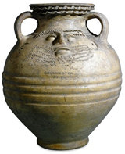

| |
The Department of
Prehistory and Early Europe (formerly Prehistoric and Romano-British
Antiquities) was created in 1969 from the division of the Department
of British and Medieval Antiquities. Although it is a comparatively
new department, many of its collections were acquired by the Museum
over the last 250 years. We now look after about 3,000,000 artefacts.
The collections include some of the best known prehistoric and Roman
objects found in Britain. Many of these can be found on . .
The Department's
collections include some of the earliest objects made by humans 2 million
years ago. The Palaeolithic and Mesolithic collections (Old and Middle
Stone Age) come from Africa, south Asia and western Europe. These include
examples of the earliest tools made in Britain. The Upper Palaeolithic
collections from Europe are one of the most important in the world.
They contain collections of Ice Age art and jewellery made on bone,
antler and ivory, contemporary with cave paintings that date from 35,000
to 10,000 years ago. The collections also include more recent artefacts
made by prehistoric hunter gatherers in the Americas and Australasia.
The Department has the largest and one of the most important collections
of British prehistoric and Roman archaeology, as well as material from
different parts of Neolithic, Bronze Age and Iron Age Europe. The Roman
collections reflect all aspects of life in the province of Britannia
from the first to the early 5th century AD.
The core of the
collections were objects given or acquired by the British Museum between
250 and 50 years ago. These objects include many of the early discoveries
that led to the development of Prehistoric and Romano-British archaeology
in Great Britain. Many objects came from private collections. Notable
amongst these are: the Palaeolithic collections from Sturge, Christy
and Lartet; the Greenwell and Morel collections from later prehistoric
sites in Britain and Europe; and Romano-British material from the Charles
Roach Smith and Gibbs collections.
Over the last 30
years these collections have been supplemented by a series of large,
scientifically excavated assemblages from sites in Britain and the Near
East. These include assemblages from the late Palaeolithic and early
Neolithic cave sites of Ksar Akil (Lebanon) and Abu Hureyra (Syria),
and the Roman site of Uley (Gloucestershire). Many of these recent assemblages
are the direct result of our own excavations and field work such as
the 400,000 year old Palaeolithic sites at Barnham and Elveden (both
Suffolk), the Neolithic flint mines at Grimes Graves (Norfolk), the
Bronze Age river-side settlement at Runnymede (Surrey), Iron Age hoards
from Snettisham (Norfolk), the Bog Body from Lindow Moss (Cheshire),
and the Roman site of Stonea (Cambridgeshire). These sites have not
only contributed to the collections, but have provided important evidence
for the interpretation of the subject.
Some of the collections
have been acquired as Treasure Trove through implementation of the Treasure
Act.
|
|

Pottery
face-urn Roman Britain, 2nd century AD, from Colchester, Essex
|
|
|
|